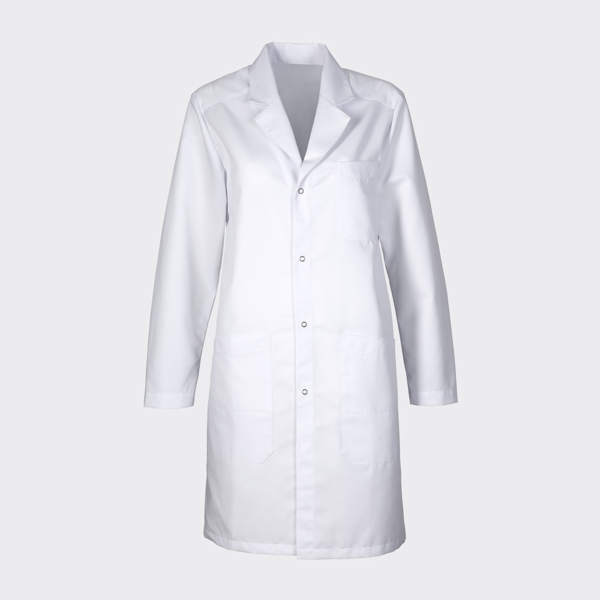
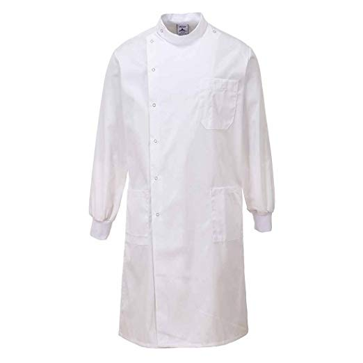
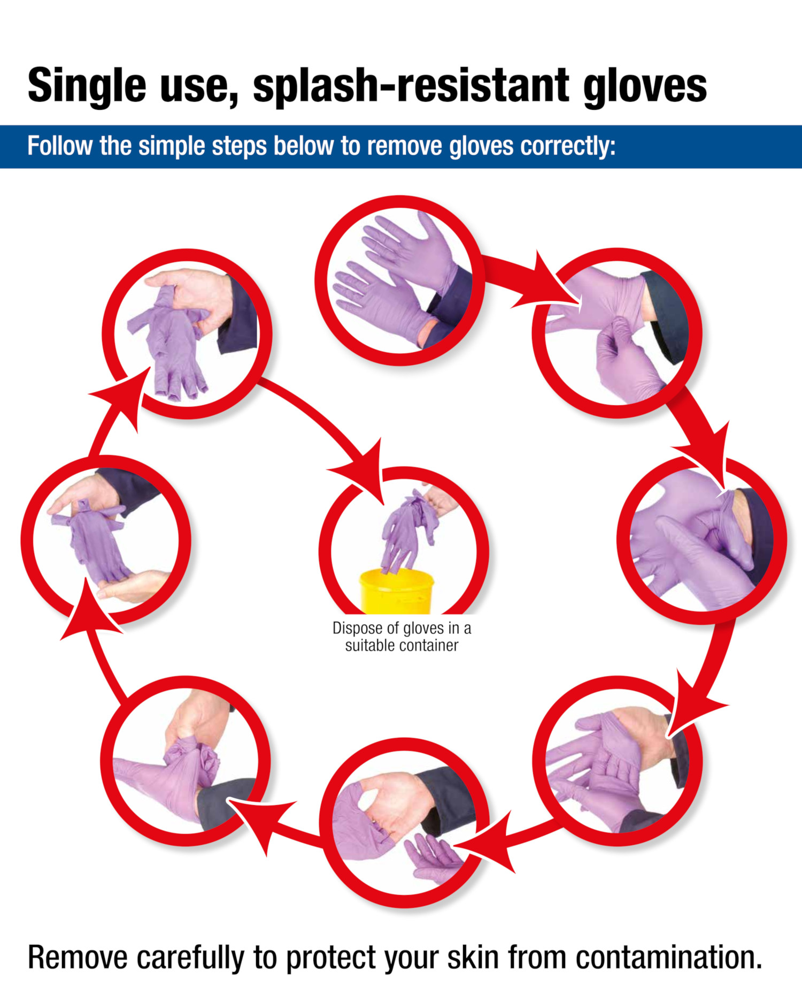
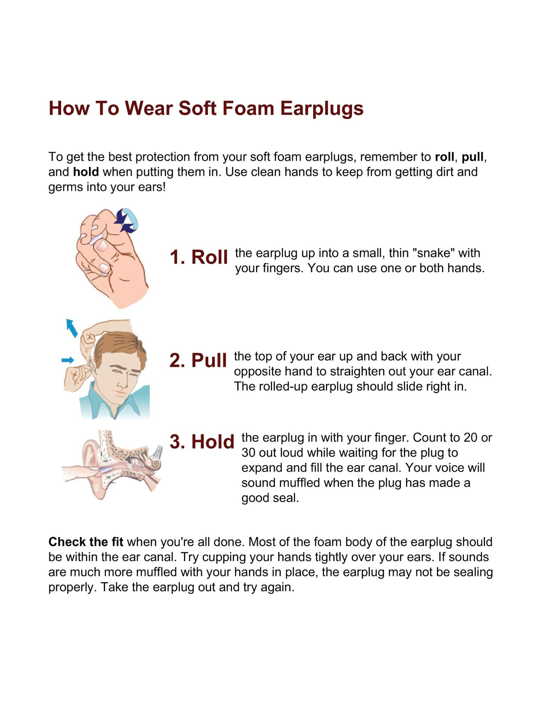

Personal Protective Equipment (PPE)
Personal Protective Equipment (PPE) includes items such as lab coats, safety glasses, and gloves that are designed to prevent accidental exposure of the wearer to hazardous biological or chemical substances or from heat, cold, and projectiles. The main thing to remember when considering PPE is that PPE is not a substitute for other control measures such as removing the risk (e.g., not using a hazardous chemical) or introducing engineering controls (e.g., use of a fume hood). PPE has serious limitations! For example:
- It only protects the wearer; others may be exposed to the hazard if not also wearing the same level of PPE.
- Every failure could expose a user to danger. If something goes wrong (e.g., a glove rips) then the wearer is potentially exposed to the hazard.
It is important to always match the type of PPE and level of protection to the individual, the particular substance, organism being used, and how it is used. This should be informed by the risk assessment (see Chapter 7 - Biological Risk Assessments for Community Labs, Chapter 10 -Chemical Safety, and Chapter 13 - Biological Safety).
In the United States, the Occupational Safety and Health Administration (OSHA) requires that employers pay for most PPE being used. Guidance from OSHA on this topic is available here.
General Lab Clothing
Wear appropriate clothing in the lab to provide basic protection against skin exposure. This includes:
- Footwear that completely covers the feet (no sandals or slipper-style shoes).
- Clothing that covers the legs (no shorts).
- No loose clothing, including scarves or dangling sleeves.
- Long hair should be tied up to avoid it getting caught or contaminated.
- In some cases, avoid wearing synthetic clothing, which may burn or dissolve when working with flammable chemicals and solvents.
Laboratory Coats
Because personal clothing is not designed for protection, lab coats are a good idea to provide protection to the wearer's skin and personal clothing from accidental contact and small splashes from hazardous chemicals and biological substances. They also absorb or deflect tiny particles that you may not notice such as aerosols and dust. They are removable in the event of a splash or an accident and offer some protection against flash and fire. If the coat starts to burn or char, you may remove it to avoid injury.
Some labs recommend that all people wear lab coats in areas where hazardous substances are actively used or GM organisms are being manipulated (check local GM regulations). Remember that even if an individual is not working with these substances, they may be exposed if someone else in the lab is doing so.
Community labs should have clear policies about when people are expected to wear lab coats. These policies should be based on a risk assessment of the activities being undertaken. Check your local regulations. For example, in the UK it is a regulatory requirement for suitable protective clothing to be worn in labs using genetically modified organisms and this would normally be a lab coat.
| Lab Coat Cautionary Tales At UC Berkeley, a researcher was plating bacteria onto a petri dish, using ethanol and a Bunsen burner to flame sterilize the spreading loop. The jar of ethanol spilled onto the lab bench and splashed onto the researcher's bare arms and T-shirt. It caught fire producing flames as tall as two feet. The researcher immediately went to and activated the emergency shower which put out the flames. A lab coat would have likely prevented most or all of the skin damage given the rapid use of a safety shower as it could have been pulled off en route and provided vital time to reach the shower. At UCLA, a researcher was adding methanol to a glass bottle to dissolve chloramphenicol for preparing growth media. He mistakenly "flamed" the rim of the methanol bottle with the Bunsen burner instead of the media bottle resulting in it catching fire. The researcher (understandably) put the bottle down very rapidly causing flaming methanol to splash out and set their clothes alight. The researcher stopped, dropped, and rolled to extinguish the flames while a colleague helped remove the coat but suffered first and second degree burns. A flame-resistant lab coat could have reduced the risks considerably. A lab worker was carrying unsealed centrifuge tubes filled with phenol-chloroform in a Styrofoam container when the Styrofoam broke and they were splashed in the face by phenol-chloroform which then dripped onto their chest. They immediately used an emergency hose but still suffered burns to the face, chest, and abdomen which could have been lessened by a lab coat. They were wearing safety goggles and therefore did not sustain a chemical burn to their eyes. | | --- |
Lab Coat Features
Lab coats come in a variety of styles and materials and should be selected according to the hazards the user is most likely to encounter (NIH Guidance for the Selection of Laboratory Coats).
Ideally, lab coats should:
- Have snaps rather than buttons so they can be swiftly ripped off in the event of an accident.
- Fit properly, covering the arms and down to the knee or slightly below—provide sizes that suit the members of the lab or encourage them to purchase their own.
- Be made of an appropriate material for hazards to be encountered.
Lab Coat Styles
| Standard 'V' Neck Coats | Howie Style |
|---|---|
|  | |
|  | |
| Suitable for general lab procedures with minimally hazardous substances. Sleeves are typically open rather than tight so there is a potential for the lower part of the arm and the wrist to be exposed to hazards. Cuffs are wide and can also accidentally get caught on items on the bench or door handles and soak up spills on the bench. | |
| Neck is open and offers poor protection to the upper chest and neck. | Recommended in any labs with biological and genetically modified materials or where hazardous chemicals are handled. |
| Sleeves have elastic or knitted cuffs that offer greater protection to the lower arms and cannot get caught on items or drag in spills. | |
| Neck is double fronted and high offering much greater protection to neck and upper chest. |
|
Lab Coat Materials
When selecting a lab coat you should consider:
- Comfort : Is the fabric heavy or lightweight? How breathable is it?
- Flammability : How quickly will it catch fire and will the fabric melt and stick to the skin of the wearer if it does?
- Autoclavability : Can you autoclave it to inactivate a biological spill?
In general, polyester-cotton blends are most suited to biology labs because they are lightweight, easily laundered, and autoclavable. That said, they melt easily and stick to the body causing severe burns, so if you frequently use flammables chemicals or flame spreaders and other instruments using ethanol and naked flames, then consider finding a cotton polyester (75% cotton, 25% polyester blend) coat that has been treated to be flame resistant. Northwestern University has produced an enlightening video demonstrating the flame resistance of some different lab coat materials.
Disposable coats are typically designed for clean room settings, short term use by visitors, and in some instances, for use of highly hazardous materials. They should be disposed of and not used multiple times. If used for visitors they should provide adequate protection against the hazards those visitors may encounter.
Lab Coat Selection Guides
- Guidance on choice of lab coat style and material from the University of Nottingham, UK
- Laboratory Coat Selection, Use, and Care Guidance from MIT
- Guidelines for Selection, Use, and Care of Laboratory Coats from the University of Alabama
| Material | Type | Features |
|---|---|---|
| 100% Cotton | Reuseable | Cotton is highly absorbent and less flammable than synthetic materials. However, it is less durable and does not autoclave well so is more suited to chemical labs. It is quite a thick, heavy material so may be uncomfortable in hot weather. |
| 40-100% polyester/cotton blends | Reuseable | These are suited to biological labs. However, they burn readily and should not be used for working with flammable chemicals. The polyester means they melt and stick to the body, causing severe burns. This should be considered if you work with solvents such as ethanol and Bunsen burners. These materials are lightweight, easily laundered, and autoclavable. |
| 25% polyester/cotton blend | Reuseable | This material is most suited to a biological lab as it is lighter than 100% cotton, has better durability and laundering properties, and can also be made flame retardant. |
| Flame-resistant treated lab coats | Reuseable | Pure cotton and 25% polyester/cotton blend can be treated with flame-resistant chemicals if there is a significant fire hazard. |
| Fire-resistant materials, e.g. Dupont Nomex | Reuseable | Although unlikely to be necessary in a community lab, you can consider highly fire-resistant materials like Dupont Nomex. These are typically used If there is a risk of arc flash, flash fire, or use of pyrophoricmaterials (i.e., use of chemicals such as iron sulfide that ignite spontaneously in air at or below 55°C/130°F). These coats are more expensive but are also resistant to most solvents, acids, and alkalis. |
| Polypropylene | Disposable | Designed to protect against non-hazardous dusts and non-hazardous light liquid splashes. It is not flame resistant. |
| Microbreathe | Disposable | Provides a barrier to particles, biological fluids, and chemicals but not flame resistant. |
| TYVEK | Disposable | Provides a barrier to particles, biological fluids, and chemicals but not flame retardant and melts at 135°C (275°F). |
Where and When to Wear Lab Coats
Guidance should be put in place around how and where lab coats are to be worn. In general, if the answer to any of the following questions is yes, you should wear a lab coat:
- Is there a risk of hazardous chemical or biological substances splashing onto me?
- Is there a risk of hot liquids splashing onto me?
- Is there a risk of a fire or naked flame being near me?
- Is there a risk that non-hazardous organisms that need to be contained (e.g., genetically modified lab strains of bacteria) could splash onto my personal clothing and be transported out of the lab?
If lab coats are needed according to the risk assessment they should be worn fully fastened, put on immediately after entering the lab, and removed immediately before exiting. They should ideally not be worn outside the work area to avoid contaminating other spaces. Refreshment areas should always be designated lab coat–free areas. Note that it may not be practical for lab coats to be entirely banned from communal spaces, particularly if people frequently need to move between adjacent labs.
Always consider why a lab coat is needed and whether decisions are based on safety or pragmatism. For example, biological materials being transported between labs should be double-contained and therefore not pose a risk to staff or the general public from a spill. Therefore, it is not necessary to routinely wear lab coats when moving samples between rooms if you have more than one lab space.
Signage may help remind people where they should and shouldn't wear lab coats. When not being worn, lab coats should be kept in appropriate storage, e.g., coat hooks adjacent to work area.
Laundering Lab Coats
Lab coats should be laundered regularly, ideally every month or two if worn frequently. They should be laundered immediately if contaminated. In both cases, the type and level of contamination should be considered.
In case of biological contamination, lab coats used in a BSL-2 biology lab or in any GM lab should be autoclaved or chemically disinfected before laundering. We recommend using a professional industrial laundry service who are set up for washing clothing from labs and/or hospitals. If this is not an option for your community lab and you have only been exposed to BSL-1, non-GM organisms, then as a last resort you could use a domestic machine. However, most don't reach high enough temperatures to kill all microbes so coats should also be autoclaved/disinfected before being removed from the lab and should be kept separate from other laundry.
In case of chemical contamination, the course of action will depend on the extent of the contamination and which chemical(s) are on the coat. If the coat has soaked up a substantial chemical spill or is contaminated with a chemical that is highly toxic, corrosive, or persistent then the lab coat must be bagged and discarded according to hazardous waste disposal procedures and not washed. It could pose a hazard to the person doing the laundry and contaminate other clothing as well as releasing chemicals into the water waste stream.
If the chemical is not regulated as hazardous waste, is typically disposed down the sink, and does not have unique health and safety considerations, wash the lab coat in the lab sink and rinse well before laundering. Do not autoclave a lab coat when chemical contamination is suspected because it may harm the autoclave or autoclave operator.
Eye Protection
Eye protection (safety glasses, chemical resistant goggles, or face shield) reduces the risk of damage to the face and eyes by chemical and biological splashes, aerosols, hazards, or flying debris. It might also protect from radiation such as UV light. Eye injuries are painful and sometimes permanent, and all it takes is a momentary lapse!
When Do You Need Eye Protection?
It is good practice to wear protective eyewear in the lab, whether or not you are doing anything that "requires" safety glasses Choose eyewear according to your exposure to hazards from all activities and not just your own protocols. Consider the following hazards and assess the eye risks:
Biological Hazards
- Any pathogenic or infectious organisms (BSL-2) should be handled with eye protection as the eye is a possible route of infection.
- Any biological organisms where there is a risk of aerosols being produced or airborne contamination.
Chemical Hazards
- Corrosives, flammables, anything that is an irritant to the eye or could otherwise damage it should be considered hazardous.
- Splashes can happen easily—is there risk of spillage or accidental splashes in the protocol?
Physical Hazards
- Working with materials or equipment under stress, pressure, spinning, mechanical force, or force that might cause fragmentation or flying particles
- Creating dust or fumes
- Working with thermal hazards or heating sources (e.g., a Bunsen burner)
- Exposure to ultraviolet (e.g., use of UV light boxes for imaging gels)
- Cryogenic exposure, e.g., dispensing liquid nitrogen and liquid helium or removing biological samples from liquid nitrogen storage (large pressures can build up inside this closed system)
Daniel Kuespert at Johns Hopkins provides a useful algorithm for deciding whether you need safety eyewear:
- Is the work you're about to do hazardous? If YES , wear appropriate eyewear. Obviously, you personally need it.
- Is anyone else in the lab doing hazardous work? If YES , wear appropriate eyewear. You are exposed to their hazards.
- Are chemicals or compressed gases stored or used in the lab at any time? If YES , wear appropriate eyewear. You do not have control over falling chemical bottles, poorly secured pressurized parts, etc.
- Is it possible anyone else will bring hazardous work into the lab while you are there? If YES , wear appropriate eyewear. Somebody can walk in and drop a chemical bottle at any time, so you need to be ready.
- Is it possible that you will "forget" to put on your eyewear if you decide to do hazardous work—or simply not do it because "you're just doing one little thing?" If YES , wear appropriate eyewear.
- Are you sure you won't do anything hazardous in lab today, no one will walk in with hazardous materials or equipment, nothing hazardous is stored in the lab, and you want to exhibit bad professional habits? If YES , you DON'T need to wear safety eyewear.
Types of Eye Protection
Eye protection should be chosen according to the risks you need to mitigate. Below are the different types of eyewear to consider. Here are some useful selection guides:
- Eye and Face Protection eTool from OSHA
- Guidance on Use and Selection of Eye and Face Protection from the University of Nottingham, UK
- Eye and Face Protection Selection Tool from the International Safety Equipment Association
| Type | Use |
|---|---|
| General safety glasses | |
| - Offer minimal level of protection. | |
| - Only recommended for use with solutions that are not likely to damage the eye, such as some buffers and salts. | |
| - Always choose models with side shields, or a single lens that wraps around the side of the glasses to the temple. | |
| - Safety glasses look very much like normal glasses but have lenses that are impact resistant and frames that are much stronger than standard prescription glasses. Safety glasses must have side shields and must be worn whenever there is a possibility of objects striking the eye, such as particles, glass, or metal shards. | |
| - Safety glasses may not always provide adequate protection from chemical splashes as they do not seal to the face. | |
| - Safety glasses would usually be adequate where the potential splash is minimal, e.g., opening eppendorf tubes, or where the chemicals in use are of low toxicity. | |
| Laser safety glasses | |
| - Selection is based on the laser wavelength and power. | |
| - Protective properties can be found printed on the eyewear. | |
| - Are not as effective as laser safety goggles at filtering all light entering the eyes (e.g., laser light reflecting off surfaces and reaching your eyes from the side). | |
| - Are not effective when using different wavelengths outside of protective range. | |
| Chemical splash goggles | |
| - Are recommended any time a splash of chemicals or infectious substances could reach the eyes. | |
| - These are made with a flexible plastic frame and one or two lenses with a flexible plastic headband. They give the eyes protection from all angles as the complete rim is in contact with the face. Some goggles are ventilated and may be unsuitable for protection against gases and fine dusts. | |
| - Are often also impact resistant so can prevent flying debris from reaching the eyes. | |
| - Chemical-splash goggles that are indirectly vented (have covers over the vents so hazardous substances cannot drain into the eye area) should be the standard eye protection when using hazardous chemicals (solids and liquids), glassware, heating sources, preserved specimens, or dust/solid particles. | |
| Impact goggles | |
| - Offer protection from flying debris only. | |
| - Often have ventilation holes on the sides, i.e., chemical splashes and dust could enter. | |
| Face shields | |
| - These have one large lens with a frame and adjustable head harness or are mounted on a helmet. Most can be worn with prescription glasses. They protect the face BUT do not fully enclose the eyes. | |
| - Should be worn in conjunction with chemical splash goggles. | |
| - Face shields are in order when working with large volumes of hazardous materials, either for protection from splash to the face or flying particles. | |
| - Examples of these times include (a) where glass apparatus is evacuated, recharged with gas, or pressurized; (b) when pouring corrosive liquids; (c) when using cryogenic fluids (e.g., when dispensing liquid nitrogen); (d) when combustion processes are being carried out; (e) where there is a risk of explosion or implosion; (f) when using chemicals that can cause direct damage to the skin (e.g., working with concentrated acids, dispensing liquid nitrogen, sonicating tissue samples, etc.); and (g) when using chemicals and biological agents that can be rapidly absorbed into the body via any path, e.g., through the skin, eyes or nose. | |
| - Face shields with UV protection should be used when exposed to UV light, e.g., when using transilluminators. | |
People Who Wear Spectacles or Contact Lenses
Glasses-wearers will need to use over-glasses or prescription safety glasses if safety glasses are required. Spectacles do not provide the same level of protection as they are not designed to prevent splashes or projectiles entering the eye.
Contact lenses are not eye protective devices and can be hazardous in some environments and degrade under specific volatile chemicals. However, NIOSH and OSHA have both released statements supporting the safe use of contacts within chemical environments. Regulations can vary by lab and members should be aware of policies regarding contact lenses. Contact lens wearers should wear eye protection in the same way as anyone else!
Overcoming Excuses Not to Wear Safety Glasses
As a community lab member or safety manager you may be confronted with situations where people are not wearing safety glasses for procedures where the risk assessment has found them necessary.
| Excuse | Response |
|---|---|
| They keep fogging up | Anti-fog glasses are available, as are wipes that protect against fogging. |
| I'm already wearing glasses | Normal spectacles offer limited protection from splashes as they are not designed for that purpose, e.g., splashes can enter from the top, bottom, and sides of most spectacle designs. |
| I'm using a fume hood | Fume hoods are designed to protect the user from hazardous fumes and while the sash offers some protection, eye protection should also be worn. |
| I haven't started my protocol yet | Hazards occur when setting up and tidying up so safety glasses should be worn for all activities and only taken off immediately before leaving the lab. Accidents often occur while moving stock bottles and other preparatory activities. |
Maintenance
All forms of safety eyewear you provide in your community lab need to maintain good vision, including on the periphery of sight, should be lightweight and comfortable in addition to providing protection from relevant hazards—otherwise members will not wear it. You should consider features like anti-scratch, anti-fog, and anti-glare coatings which will improve function and reduce maintenance or replacement. Make sure to clean your safety eyewear regularly.
|
Eye Protection Cautionary Tales
A research technician at a cancer research center was cutting a band of purified DNA from an agarose gel on a UV light box. No one else in the lab wore UV-protective visors or other eye protection so neither did she. After cutting out the band she went on with her work and headed for a Friday night gig with her boyfriend. Her eyes became progressively worse until "it felt as though there were 100 eyelashes in my eye". A trip to the emergency department revealed she had been burned by UV light exposure. Luckily she recovered full over the weekend, but it was a close call and only after returning to the lab did she realize that all of the other researchers in the lab happened to wear spectacles which had been offering them partial protection from the UV radiation. The lab immediately purchased two UV face shields (source: https://www.sciencemag.org/careers/2006/08/wear-your-safety-goggles). Professor K. Barry Sharpless of MIT was blinded in one eye in 1970 as an early-career researcher despite feeling that "I conscientiously observed safety measures." He removed his safety glasses and put on his coat on his way out of the lab in the early hours of the morning but stopped to look at a co-worker's experiment flame-sealing an NMR tube. He picked up the tube to hold it up to the light and have a look. The tube frosted over and as he wiped it he saw the solvent level drop rapidly. Despite realizing this meant that condensed oxygen had been sealed in the tube and it was now pressurised he was unable to move before the tube exploded and "glass fragments shredded my cornea, penetrated the iris, and caused the partial collapse of one eye". There was a chance that he could have lost sight in both eyes due to "sympathetic ophthalmia" but luckily this did not happen. In Sharpess's words "the lesson to be learned from my experience is straightforward: there's simply never an adequate excuse for not wearing safety glasses in the lab at all times" (source http://news.mit.edu/1992/safety-0311). | | --- |
Gloves
Appropriate gloves should be worn when handling biological or chemical substances that may be absorbed through the skin or that are corrosive, harmful, irritating, or otherwise damaging to the skin.
The main issues to consider are:
- What gloves to wear
- How to remove gloves safely (to prevent potential cross-contamination)
Deciding What Gloves to Wear
Gloves should be selected on the basis of their intended use. Glove manufacturers usually produce helpful charts to show how well their gloves perform against different substances. These charts use three key terms:breakthrough time, permeation rate, and degradation.
- Breakthrough time: The time a chemical takes to permeate the glove material and reach the inside. Permeation is a process by which a chemical can pass through a material without going through pinholes or pores or other visible openings. This tells you for how long you can use a glove.
- Permeation rate : The rate at which the chemical will move through the material. The higher the rate the more of the chemical will move through the glove. Choose a low rate.
- Degradation: Degradation indicates the deterioration of the glove material on contact with a specific chemical. Some chemicals can destroy the glove material. It may get harder, softer, or may swell. Choose gloves with an excellent or good degradation rating.
The performance of glove materials can vary slightly from manufacturer to manufacturer, so base your selection on the correct manufacturers' data and bear in mind that the manufacturers' data is for pure chemicals, not mixtures. When you mix chemicals, their properties can change. As a basic rule, base your glove selection on the components in the mixture with the shortest breakthrough time. However, the only way to be absolutely sure that a glove performs well against the mixture is to have it tested.
Chemical Safety and Gloves
No glove can protect you from all chemicals, and all gloves are permeable to an extent. Moreover, using the wrong gloves can increase chemical contact. Once you plan your experiment, consult a Glove Reference Chart provided by a reputable manufacturer—preferably check more than one and look for breakthrough times. Also look out for lab standards when purchasing gloves, e.g., European Standard EN 374-3 or ASTM F739-12 indicate gloves that are resistant to chemicals and different levels are awarded depending on breakthrough time from 10 min to 4 hours.
For example, even though nitrile gloves are ubiquitous in most laboratories, here are a few common lab chemicals you may encounter that are NOT compatible with nitrile gloves:
- Acetone and acetonitrile: like many other highly volatile solvents (e.g., for use in HPLC), these will melt your nitrile glove instantly! Use butyl gloves instead.
- Dimethyl sulfoxide (DMSO): will permeate nitrile gloves very rapidly (and create a garlic-like taste in the mouth). Although DMSO itself is nontoxic, it can carry other toxins into your skin. Use neoprene or butyl gloves instead.
- Phenol/chloroform (Trizol): This combination is notoriously incompatible with most types of gloves—avoid if at all possible as there are better alternatives available. See Chapter 10 - Chemical Safety.
Glove selection resources:
- Selection and use of gloves guidelines from University of Wollogong, Australia
- Example glove selection chartfrom Augusta University, U.S.
- Glove selection guidance from the Health and Safety Executive, UK
Gloves for Biological Work
Nitrile gloves are a good option for most biological work and widely available from medical suppliers. However, many medical grade gloves are not recommended for use in labs because they are intended for very short term wear (e.g., a medical examination of a single patient), rather than extended periods. Look for lab standards such as European Standard EN 374-2 or ASTM. This indicates gloves that are micro-organism resistant and act as an effective barrier against microorganisms and the liquids they live in.
If a biological material, such as DNA, is being prepared in phenol/chloroform, nitrile gloves are not suitable as they are not resistant to either chemical. Neoprene is preferred.
In summary, always check the compatibility of chemicals in your protocol with your chosen gloves! Chemical resistance should generally take precedence over biological protection as chemically impermeable gloves will often be impermeable to most biological organisms.
However, if you work with viruses, you may need virus specific gloves. ISO 16604:2004 and ASTM F1671-97b (Standard Test Method for Resistance of Materials Used in Protective Clothing to Penetration by Blood-borne Pathogens using Phi-X174 Bacteriophage Penetration as a Test System) are globally recognized test standards for glove resistance to penetration by viruses.
Latex and Allergies
In most cases we recommend against the use of latex gloves. In the U.S., 8-17 percent of healthcare workers who regularly use latex gloves develop allergies to proteins in the latex. This can result in a range of symptoms from dermatitis to serious breathing problems and anaphylactic shock, according to AAFA. If you do buy latex gloves ensure they are low-protein and powder free.
Be allergy aware with all types of gloves. If a lab member develops rashes or skin problems you may need to try different materials. For example, some people develop allergies to the accelerant used in manufacturing in nitrile gloves. Accelerant-free versions are available.
If a lab member has reported a new or existing allergy, particularly with serious symptoms then the safest response is to switch the lab away from that type of glove entirely to avoid unintentional contact with the allergen. Work with the member to find a safe way forward.
General Tips for Gloves
- Select gloves of the correct size; gloves that are too small can be uncomfortable and may tear. Oversized gloves may interfere with manual dexterity.
- Longer sleeved gloves should be worn if the wrists and arms are also at risk of contact with the substance.
- Gloves should be checked before use for punctures, tears, etc. and should be replaced periodically.
- Some gloves, especially lightweight disposables, may be flammable. Keep hands away from naked flames or other high temperature heat sources.
- When removing gloves, do so in a way that avoids skin contact with contaminated parts (see Removing Gloves Safely).
- Do not wear gloves outside the lab.
- Do not touch items with gloves that are likely to be touched by ungloved hands like door handles and telephones.
- Disposable single-use gloves must not be reused.
- Consider cuff length. Some hazards will require a longer cuff length to protect both the hand and forearm to prevent liquids seeping into gloves. A longer cuff length needs to be considered if large volumes are being used or if hands are required to be immersed in liquids.
- Consider the duration and nature of contact. Tasks that require hands to be immersed in liquids will need a higher level of protection than ones where only splash protection is required. Tasks where the user is exposed to extreme temperatures will also need a higher level of protection. Consider the amount of contact time with the hazards (e.g., occasional contact, continuous immersion of hands, or continual contact).
- Do not blow into gloves prior to putting them on; you risk contaminating the gloves, as well as compromising their integrity.
Removing Gloves Safely
Gloves should be removed using the 'surgical technique' to avoid contamination of hands (see this video for a demonstration and the poster below). Many people have their own individual ways of removing gloves that are just as effective. A good way to train people and confirm they can successfully remove gloves without contamination is to get them to cover the gloves they are wearing with cream that glows under UV light (e.g., GloGerm) and inspect their skin under a blacklight after they have removed the gloves. Remember to check the arm and the surrounding clothing and surfaces for splashes.

Hand Care
Gloves are not a substitute for hand washing and good hand care. All labs should have dedicated hand-washing facilities with soap and paper towels. While undertaking chemical and biological operations, the hands should be washed:
- Regularly
- Immediately if contaminated by a chemical
- Always before leaving the lab
- Before and after using the toilet
Also consider providing hand cream or moisturiser. Dry skin is more prone to infection and more permeable to chemicals. Laboratory members with skin conditions that increase the permeability of the skin such as psoriasis or eczema may need to use a higher level of protection when working with hazardous chemicals. Consider using butyl rubber or neoprene gloves.
Thermal Protection (Hot and Cold)
There are times in the lab when hot and cold temperatures will require specific protection.
Hot Temperatures
Heat-resistant gloves should be used when unloading an autoclave and handling glass bottles or plastic tubes from microwaves and hot plates. These are typically worn over disposable gloves and should be heat resistant but also have good grip. Gloves with mid-arm or longer protection should be selected for transferring hot liquids between containers. Take care to avoid heat-resistant gloves that are wet as it may make the container slippery or transmit heat more readily.
Materials such as leather, Nomex, and silicone can be used. Always consider grip and dexterity. Some gloves come with rubber and silicone grips and are available as "mitts," but five-fingered gloves are preferable as they improve dexterity.
Cold Temperatures
Cold-resistant gloves are insulated gloves to prevent burns from extreme cold temperatures when retrieving samples from ultra low temperature freezers (-80°C) or handling cryogens. They have different properties from gloves designed for hot temperatures. For handling cryogens, gloves specifically designed for cryogen handling reach at least mid-way up the arms. Note that many cryogen gloves are not rated for submersion into the liquid nitrogen itself. If you need to retrieve something dropped into liquid nitrogen use a tool and not your gloved hands.
Masks and Respirators
Respiratory protective equipment (RPE) should only be used when toxic gases, hazardous volatiles, or dusts are being generated and cannot be contained by an engineering control such as a glove box, fume cupboard, or other well-ventilated area/apparatus. Engineering controls should be used whenever possible.
We recommend that community labs do not undertake work requiring masks or respirators because other people in the area will still be exposed to the hazard and there is a high training, testing, and maintenance burden to ensure the equipment is functional. In addition, where equipment relies on a tight fit to the face, it is recommended (and in some jurisdictions required) that wearers and masks are tested for individual face-fit.
Decisions should be made according to the risk assessment and in some cases RPE is a good protective measure.
Hearing Protection
Some lab equipment makes a loud noise, for example sonicators use ultrasonic sound energy to disrupt biological samples. The best course of action is always to find an alternative that does not produce the hazard. Mechanical disruptors such as bead beaters are typically quieter and do not require hearing protection. If experiment or technical requirements for the task do make loud noise, the next step is to introduce engineering controls such as putting the equipment in a separate room and/or in an enclosed sound-proofing box. If there is no option but to have the operator or other members of the lab exposed to the noise, then hearing protection will be required.
How Loud Is Loud?
Any uncomfortably loud noises should be assessed and hearing protection considered. Typically exposure above 80-90 dB averaged over an 8 hour work day is the level where regulations require protection to be provided (US OSHA regulation = 90 dB, EU Noise at Work Regulations = 80 dB, check your local regulator!). This is about the equivalent of a power mower, heavy traffic, a blender or a hand saw. The averaging process is complicated because dB is a logarithmic measure so a small dB increase means a large reduction in the safe time limit. For example, a one hour exposure to 90 dB is equivalent to more than eight hours exposure to 80 dB.
If you're not sure how loud your equipment is, you can ask the manufacturer, use a decibel measuring app on your phone/laptop, or find someone with a professional device to perform a measurement.
The type of sound also makes a difference as hearing protection is typically good at blocking high frequency sounds but functions poorly at low frequencies. Luckily, low frequencies are less likely to be encountered in a community lab.
Type of Hearing PPE
Ear protection should dampen the sound reaching the operator's ear drum to below 85 dB. For environments like community labs where the noise hazard is likely to be present for only a short time, ear muffs may be the most convenient form of protection, but it's important to offer a choice so people can select a protector that fits them and is comfortable. Remember that everyone exposed to the noise should wear them, not just the operator of the machine.
You should consult the manufacturer's guidance and the level of noise you are trying to reduce for the appropriate protection. You don't want to overshoot and destroy audibility of all sounds such as alarms, which can be dangerous and deter people from wearing the protection in the first place.
In general, try not to reduce the audible noise to below 70 dB. Low attenuation versions of ear protectors are available and while unlikely to be relevant in community labs, protectors can also feature sound restoration.
Each type of hearing PPE will typically come with a Single Number Rating (SNR) that provides an estimate of the noise protection offered under ideal use of the device.There is guidance available from the UK HSE on SNR ratings to look for and a calculator for noise exposure and protection.
| Pre-molded ear plugs | Come in different sizes and shapes to fit different sized ear canals. Obtaining a good seal with the ear canal may be challenging because they do not expand or contract. Not recommended for community labs due to the need to know people's sizes. |
|---|---|
| Formable or foam ear plugs | These plugs expand to fill and seal the ear canal thus fitting different sizes. Need to be compressed and rolled prior to insertion and should be inserted with clean hands so hand washing facilities should be available. Training should be provided in how to insert them properly because an incorrectly compressed earplug may give virtually no protection. |
| Ear muffs | Fit against the head and enclose the entire ear. The inside of the cup is lined with acoustic foam to reduce noise. Their effectiveness depends on the seal between the foam and the head. Should be inspected frequently and before use to check for damage and cleaned regularly. |
| Hearing bands or canal caps | These devices cover the ear canal at its opening. They do not provide as much of a seal inside the ear canal and generally provide less protection than ear muffs or plugs, so they are typically not recommended. |
Maintenance
You will need to make sure that hearing protection works effectively and check that:
- It is in good condition
- Seals are undamaged on ear muffs
- It is clean
- Headbands are not damaged
- Compressible earplugs are still soft, pliable, and clean (if reused)
Training
Badly fitted ear plugs or ear muffs worn inappropriately will offer very little protection. For compressible ear plugs, the following procedure should be followed:

Video: https://www.cdc.gov/niosh/mining/works/coversheet1840.html
For ear muffs, the main concern is maintaining a tight seal to the head so they should not be worn over other clothing or PPE, e.g., hats or face visors that might get in the way. In these cases consider ear plugs.
Protective Clothing Outside the Lab
The improper use or lack of protective clothing and equipment in a laboratory can lead to chemical burns, biological exposures, or other potential dangers. To help reduce the risk of exposure, personnel are encouraged to wear gloves, safety glasses, lab coats, and other personal protective clothing. However, in public areas, such as hallways and lounges, wearing personal protective clothing and equipment is not recommended. This is because contaminated clothing may present a hazard, and the perception of contaminated protective clothing and equipment in a public area may project a careless image to both colleagues and visitors.
Wearing gloves outside the laboratory should be minimized, except to move hazardous materials between laboratories. Chemicals should be transported from place to place on a cart, in a clean secondary container, or in a bottle carrier with secure handles. When this is not an option, personnel should use a clean, ungloved hand to touch common surfaces and a gloved hand to carry the items: the one-glove rule. Alternatively, the material should be packaged so the outer container may be transported without the need for PPE.
Protective gloves should never come into contact with door handles, elevator buttons, telephones, lavatory faucets, vending machines, bottled water dispensers, ice-making machines, or other surfaces outside the laboratory. Also, please be aware that strict federal and state regulations address the transport of hazardous (e.g., biological, chemical, radiological) materials on public roads.
For the sake of safety, appearances, and courtesy, personnel are asked not to wear contaminated, stained, or potentially contaminated lab coats and other research clothing and equipment in any public area, especially dining areas, lounges, auditoriums, conference rooms, or other non-hazardous areas.
If you're undertaking activities "in the field" or transporting heavy items to and from the lab you might also want to consider protective clothing. Field work might require specific PPE equipment for the task, which should be addressed during the risk assessment. An example guideto aid in planning your field activities was made by James Madison University. For example:
- Steel toe-capped boots if carrying heavy pieces of lab equipment that could be dropped
- Waterproof and warm clothing if performing field-work in cold and wet conditions
- Sunhats and sunglasses if performing field-work in hot conditions; sunblock or sun protective clothing
- Communication devices (or emergency contacts), radios, or GPS.
- Emergency fall harnesses, protective knee or elbow pads
- First aid kits, water
Medical Surveillance
Take medical conditions and pregnancy into account when assessing risk for participation in activities and protocols. For example, the use of mutagens and teratogens should be especially avoided by pregnant women; immuno-compromised members may not be able to work with particular microorganisms without enhanced PPE or containment measures; and certain skin conditions make the skin more permeable to chemicals and therefore also require enhanced PPE.
Ensure that you have processes in place to collect relevant health information from participants in your activities and make decisions based on that information, but be sure to keep that information protected and private.
Appendix: PPE Standards
Lab Coat Material Standards
There are material standards for working with infectious materials and for chemical and fire hazards. You should only purchase lab coats that meet these standards, so be sure to check with the manufacturer if they are not clearly listed in the product description.
| | U.S. Standard | EU Standard | | --- | --- | --- | | Biological hazards | ASTM F1670 (penetration by synthetic blood)ASTM F1671 (bloodborne pathogen exposure) | EN 14605:2005 (Protective clothing against liquid chemicals. Performance requirements for garments providing protection to parts of the body.) | | Liquid or chemical hazards | AATCC Method 42 (resistance to the penetration of water by impact) and ASTM F903 (liquid chemical barrier) | EN 14126:2003 (Protective clothing. Performance requirements and tests methods for protective clothing against infective agents Corrected 2004) | | Physical hazards | NFPA 701 or 2112 (flame propagation tests) | EN 11612:2008 (Protective clothing. Clothing to protect against heat and flame) |
Eye Protection Standards
| | U.S. Standard | EU Standard | | --- | --- | --- | | Impact hazards | ANSI/ISEA Z87.1-2015Z87+ | EN.166S (F and B offer greater impact protection but usually unnecessary for lab) | | Splash, droplets, andspray | ANSI/ISEA Z87.1-2015D3 | EN166-3 | | Heat protection | There are currently no marking designations for eye protection to heat or high temperature exposure in the ANSI/ISEA Z87.1-2015 standard. | None | | UV radiation | ANSI/ISEA Z87.1-2015U and scale number 1-6 | EN170 | | Lasers | There are currently no marking designations for eye protection to heat or high temperature exposure in the ANSI/ISEA Z87.1-2015 standard. Refer to ANSI Z136.1-2014 "Safe Use of Lasers," for guidance in choosing the correct protective eyewear when working with lasers. | EN207 |
Standards for Thermal Protection
- EN 407:2004 Protective gloves against thermal risks (heat and/or fire)
- EN 511:2006 Protective gloves against cold
- ASTM F1060-08 Conductive heat resistance